Artifact / Branding / Photography
The engagement extended beyond visual identity to include technical consulting for point-of-sale systems and class management system enhancements — grounding the brand in the operational reality of the center.
Zen Life & Meditation Center
Branding / Photography
Ongoing
Carlos Segura
Direction
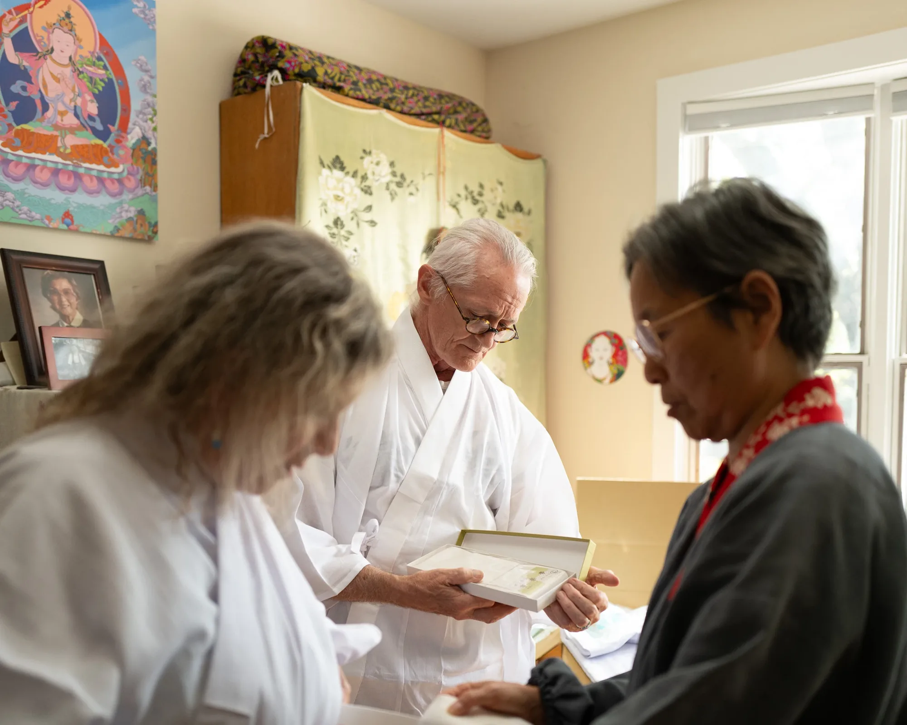
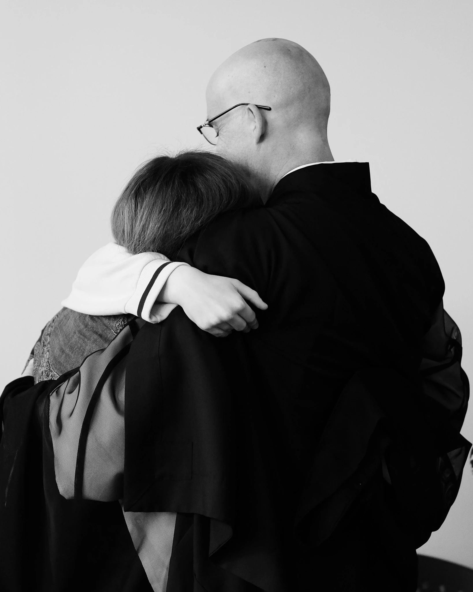
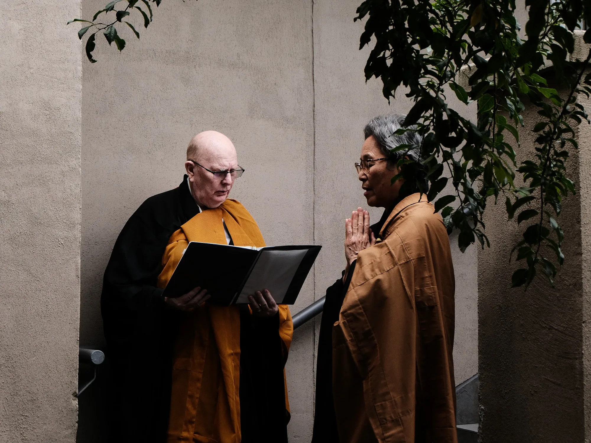
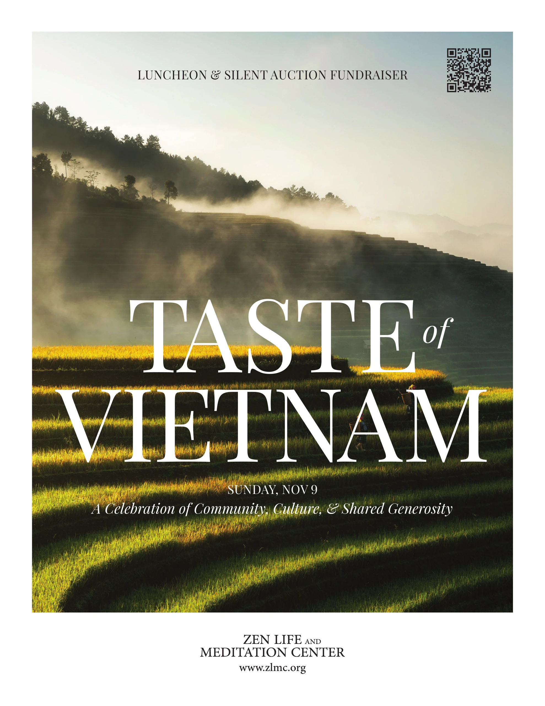
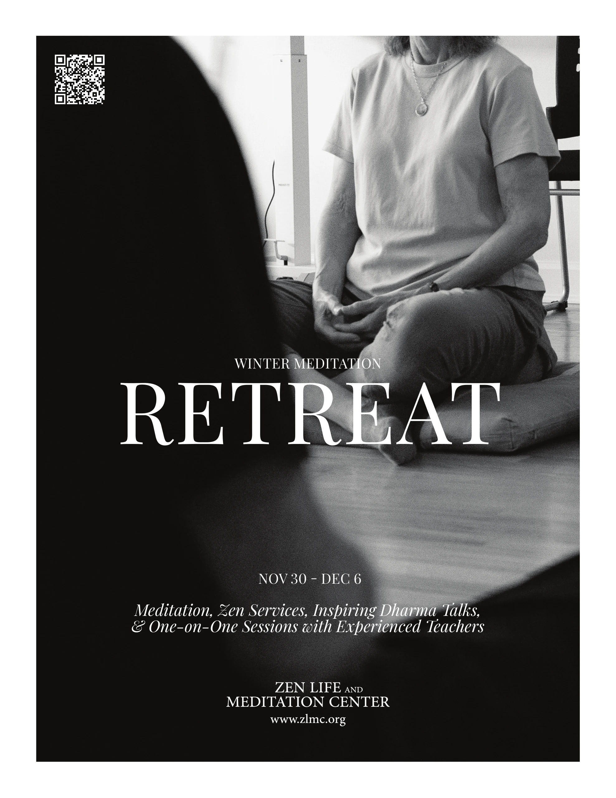
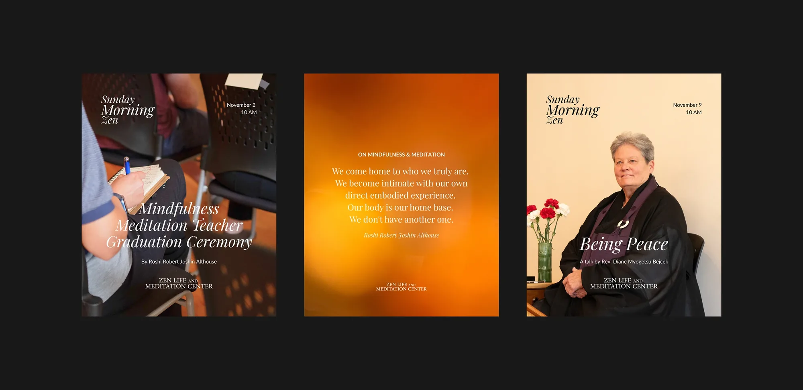
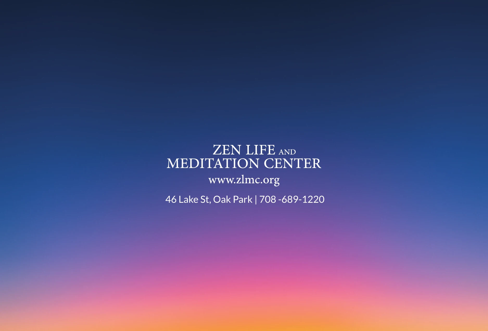
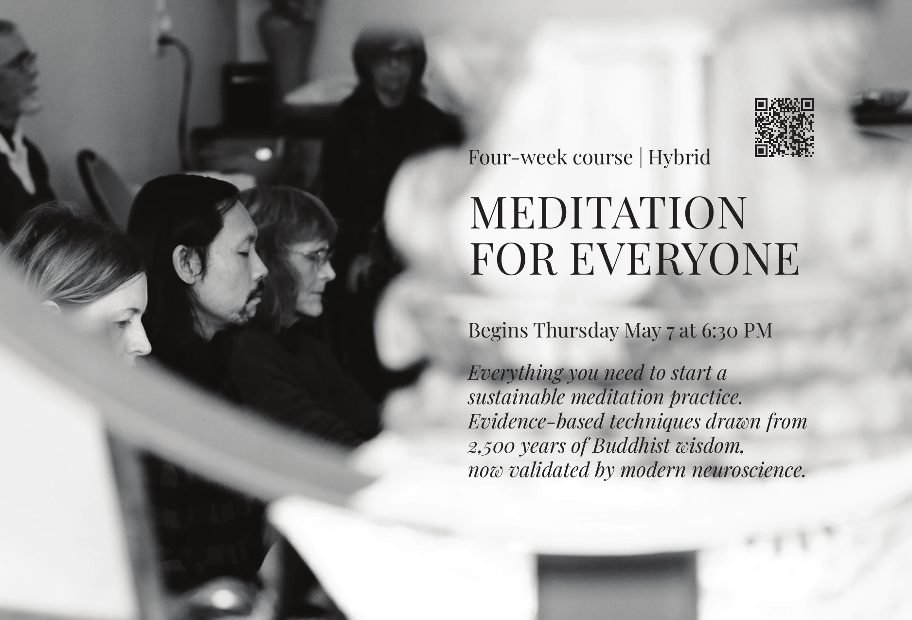
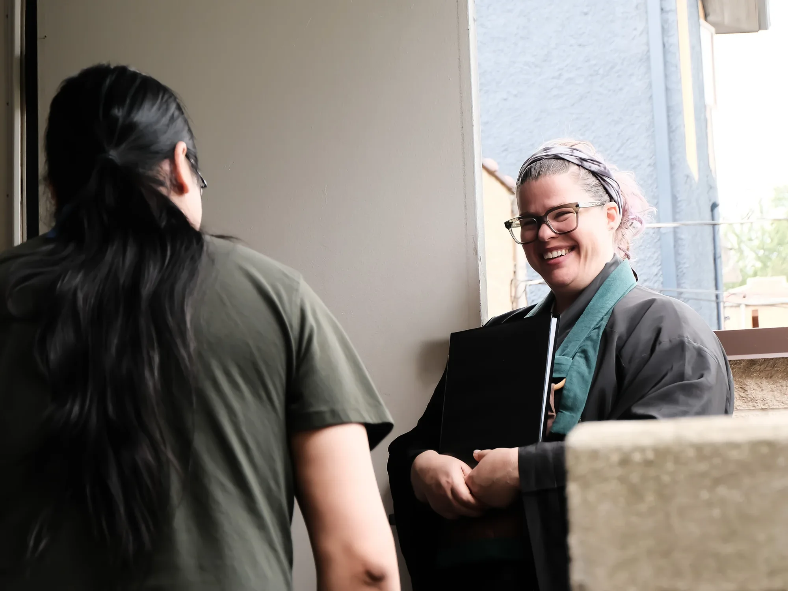
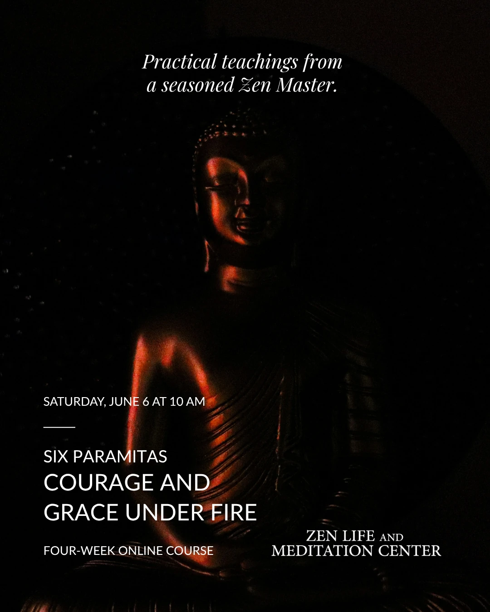
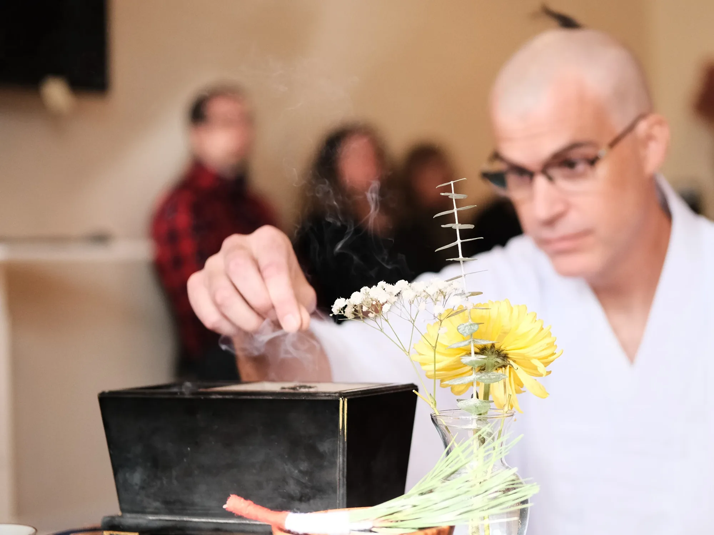
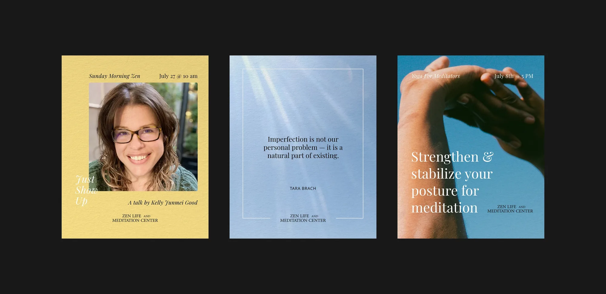